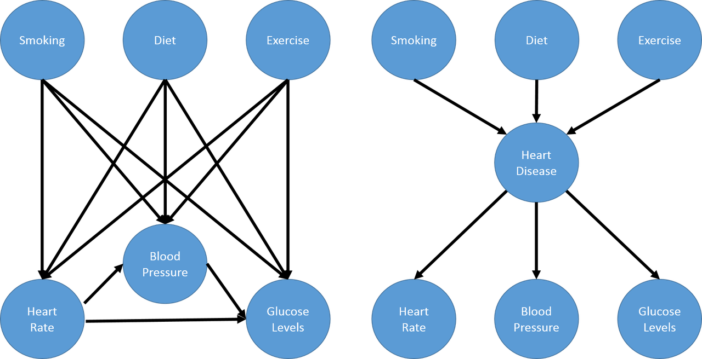
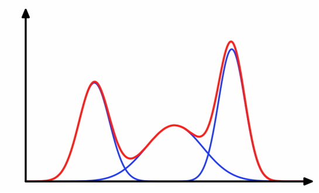

The Expectation-Maximization Algorithm
This post is going to talk about a widely used method to find the maximum likelihood (MLE) or maximum a posteriori (MAP) estimate of parameters in latent variable models called the Expectation-Maximization algorithm. You have probably heard about the most famous variant of this algorithm called the k-means algorithm for clustering. Even though it's so ubiquitous, whenever I've tried to understand why this algorithm works, I never quite got the intuition right. Now that I've taken the time to work through the math, I'm going to attempt to explain the algorithm hopefully with a bit more clarity. We'll start by going back to the basics with latent variable models and the likelihood functions, then moving on to showing the math with a simple Gaussian mixture model 1.
Background
Latent Variables
A latent variable model is a type of statistical model that contains two types of variables: observed variables and latent variables. Observed variables are ones that we can measure or record, while latent (sometimes called hidden) variables are ones that we cannot directly observe but rather inferred from the observed variables.
One reason why we add latent variables is to model "higher level concepts" in the data, usually these "concepts" are unobserved but easily understood by the modeller. Adding these variables can also simplify our model by reducing the number of parameters we have to estimate.
Consider the problem of modelling medical symptoms such as blood pressure, heart rate and glucose levels (observed outcomes) and mediating factors such as smoking, diet and exercise (observed "inputs"). We could model all the possible relationships between the mediating factors and observed outcomes but the number of connections grows very quickly. Instead, we can model this problem as having mediating factors causing a non-observable hidden variable such as heart disease, which in turn causes our medical symptoms. This is shown in the next figure (example taken from Machine Learning: A Probabilistic Perspective).
Notice that the number of connections now grows linearly (in this case) instead of multiplicatively as you add more latent factors, this greatly reduces the number of parameters you have to estimate. In general, you can have an arbitrary number of connections between variables with as many latent variables as you wish. These models are more generally known as Probabilistic graphical models (PGMs).
One of the simplest kinds of PGMs is when you have a 1-1 mapping between your latent variables (usually represented by \(z_i\)) and observed variables (\(x_i\)), and your latent variables take on discrete values (\(z_i \in {1,\ldots,K}\)). We'll be focusing on this much simpler case as explained in the next section.
Gaussian Mixture Models
As an example, suppose we're trying to understand the prices of houses across the city. The housing price will be heavily dependent on the neighborhood, that is, houses clustered around a neighborhood will be close to the average price of the neighborhood. In this context, it is straight forward to observe the prices at which houses are sold (observed variables) but what is not so clear is how is to observe or estimate the price of a "neighborhood" (the latent variables). A simple model for modelling the neighborhood price is using a Gaussian (or normal) distribution, but which house prices should be used to estimate the average neighborhood price? Should all house prices be used in equal proportion, even those on the edge? What if a house is on the border between two neighborhoods? Can we even define clearly if a house is in one neighborhood or the other? These are all great questions that lead us to a particular type of latent variable model called a Gaussian mixture model.
Visually, we can imagine the density of the observed variables (housing prices) as the "sum" or mixture of several Gaussians (image from http://dirichletprocess.weebly.com/clustering.html):
So when a value is observed, there is an implicit latent variable (\(z_i\)) that decided which of the Gaussians (neighborhoods) it came from.
Following along with this housing price example, let's represent the price of each house as real-valued random variable \(x_i\) and the unobserved neighborhood it belongs to as a discrete valued random variable \(z_i\) 2. Further, let's suppose we have \(K\) neighborhoods, therefore \(z_i\) can be modelled as a categorical distribution with parameter \(\pi = [\pi_1, \ldots, \pi_k]\), and the price distribution of the \(k^{th}\) neighborhood as a Gaussian \(\mathcal{N}(\mu_k, \sigma_k^2)\) with mean \(\mu_k\) and variance \(\sigma_k^2\). The density, then, of \(x_i\) is given by:
Where \(\theta\) represents the parameters of the Gaussians (all the \(\mu_k, \sigma_k^2\)) and the categorical variables (\(\pi\)). \(\pi\) represents the prior mixture weights of the neighborhoods i.e. if you didn't know anything else, what is the relative proportion of neighborhoods. Notice that since \(z_i\) variables are non-observed, we need to marginalize them out to get the density of the observed variables (\(x_i\)). Translating Equation 1 to plainer language: we model the price distribution of each house as a linear combination 3 ("mixture model") of our \(K\) Gaussians (neighborhoods).
Now we have a couple of relevant inference problems, given different assumptions:
-
Assuming you know the values of all the parameters (\(\theta\)), compute the responsibility, \(r_{ik}\), of a cluster \(k\) to a point \(i\): \(r_{ik} = p(z_i=k | x_i, \theta)\).
This essentially tells you how "likely" or "close" a point is to an existing cluster. We'll use this below in the EM algorithm but this computation can also be used for GMM classifiers to find out which class \(x_i\) most likely belongs to.
-
Estimating the parameters of the Gaussians (\(\mu_k, \sigma^2\)) and categorical variable (\(\pi\)) given:
Just the observed points (\(x_i\));
The observed points (\(x_i\)) and the values of the latent variables (\(z_i\)).
The former problem is the general unsupervised learning problem that we'll solve with the EM algorithm (e.g. finding the neighborhoods). The latter is a specific problem that we'll indirectly use as one of the steps in the EM algorithm. Coincidentally, this latter problem is the same one when using GMMs for classification except we label the \(z_i\) as \(y_i\).
We'll cover the steps needed to compute both of these in the next section.
The Expectation-Maximization Algorithm
The Expectation-Maximization (EM) Algorithm is an iterative method to find the MLE or MAP estimate for models with latent variables. This is a description of how the algorithm works from 10,000 feet:
Initialization: Get an initial estimate for parameters \(\theta^0\) (e.g. all the \(\mu_k, \sigma_k^2\) and \(\pi\) variables). In many cases, this can just be a random initialization.
Expectation Step: Assume the parameters (\(\theta^{t-1}\)) from the previous step are fixed, compute the expected values of the latent variables (or more often a function of the expected values of the latent variables).
Maximization Step: Given the values you computed in the last step (essentially known values for the latent variables), estimate new values for \(\theta^t\) that maximize a variant of the likelihood function.
Exit Condition: If likelihood of the observations have not changed much, exit; otherwise, go back to Step 1.
One very nice part about Steps 2 and 3 are that they are quite easy to compute sequentially because we're not trying to figure out both the latent variables and the model parameters at the same time. We'll show later that every iteration of the algorithm will increase the likelihood function but since it's non-convex, we're only guaranteed to approach a local maxima. One way to get around this by running the algorithm for multiple initial values to get broader coverage of the parameter space.
EM algorithm for Gaussian Mixture Models
Coming back to GMMs, let's review what information we have when we're estimating them (i.e. problem 2(a) from the previous section). To start, we have a bunch of observed variables (\(x_i\)). Since we've decided on using a GMM model, we also have to pick the hyper parameter \(K\) that decides how many Gaussians we want in our model 4. That's about all the information we have. Given that, the next algorithm (using pseudo-Python) describes how we would estimate the relevant unknowns:
# Assume we have function to compute density of Gaussian # at point x_i given mu, sigma: G(x_i, mu, sigma); and # a function to compute the log-likelihoods: L(x, mu, sigma, pi) def estimate_gmm(x, K, tol=0.001, max_iter=100): ''' Estimate GMM parameters. :param x: list of observed real-valued variables :param K: integer for number of Gaussian :param tol: tolerated change for log-likelihood :return: mu, sigma, pi parameters ''' # 0. Initialize theta = (mu, sigma, pi) N = len(x) mu, sigma = [rand()] * K, [rand()] * K pi = [rand()] * K curr_L = np.inf for j in range(max_iter): prev_L = curr_L # 1. E-step: responsibility = p(z_i = k | x_i, theta^(t-1)) r = {} for i in range(N): parts = [pi[k] * G(x_i, mu[k], sigma[k]) for i in range(K)] total = sum(parts) for i in k: r[(i, k)] = parts[k] / total # 2. M-step: Update mu, sigma, pi values rk = [sum([r[(i, k)] for i in range(N)]) for k in range(K)] for k in range(K): pi[k] = rk[k] / N mu[k] = sum(r[(i, k)] * x[i] for i in range(N)) / rk[k] sigma[k] = sum(r[(i, k)] * (x[i] - mu[k]) ** 2) / rk[k] # 3. Check exit condition curr_L = L(x, mu, sigma, pi) if abs(prev_L - curr_L) < tol: break return mu, sigma, pi
Caution: This is just an illustration of the algorithm, please don't use it! It probably suffers from a lot of real-world issues like floating point overflow. However, we can still learn something from it. Let's break the major computation steps down to understand the math behind it.
In the Expectation Step, we assume that the values of all the parameters (\(\theta = (\mu_k, \sigma_k^2, \pi)\)) are fixed and are set to the ones from the previous iteration of the algorithm. We then just need to compute the responsibility of each cluster to each point. Re-phasing this problem: Assuming you know the locations of each of the \(K\) Gaussians (\(\mu_k, \sigma_k\)), and the prior mixture weights of the Gaussians (\(\pi_k\)), what is the probability that a given point \(x_i\) is drawn from cluster \(k\)?
We can write this in terms of probability and use Bayes theorem to find the answer:
This is just the normalized probability of each each point belonging to one of the \(K\) Gaussians weighted by the mixture distribution (\(\pi_k\)). We'll see later on that this expression actually comes out by taking an expectation over the complete data log likelihood function, which is where the "E" comes from. In any case, this step becomes quite simple once we can assume that the parameters \(\theta\) are fixed.
The Maximization Step turns things around and assumes the responsibilities (proxies for the latent variables) are fixed, and now the problem is we want to maximize our (expected complete data log) likelihood function across all the \(\theta = (\mu_k, \sigma_k^2, \pi)\) variables. We'll show the math of how to arrive at these expressions below and just describe the intuitive interpretation here.
First up, the distribution of the prior mixture weights \(\pi\). Assuming you know all the values of the latent variables (i.e. \(r_{ik}\): how much each point \(x_i\) contributes to each cluster \(k\)), then intuitively, we just need to sum up the contribution to each cluster and normalize:
Next, we need to estimate the Gaussians. Again, since we know the responsibilities of each point to each cluster, we can just use our standard methods for estimating the mean and standard deviation of Gaussians but weighted according to the responsibilities:
Again we shall see that this comes out from the expected complete data log likelihood function.
As a last note, there are many variants of this algorithm. The most popular being the K-Means algorithm. In this variant, we assume that both the shape of the Gaussians (\(\sigma_k = \sigma^2I_D\)) and distribution of latent variables \(\pi=\frac{1}{K}\) are fixed, so now all we have to compute are the cluster centers. The other big difference is that we now perform hard clustering, where we assign responsibility of a point \(x_i\) to exactly one cluster (and zero responsibility to other clusters). These assumptions simplify Equation 2-4 while keeping all the nice properties of the EM algorithm, making it quite a popular algorithm for unsupervised clustering.
Expectation-Maximization Math
In this section, we'll go over some of the derivations and proofs related to the EM algorithm. It's going to get a bit math-heavy but that's usually where I find that I get the best intuition.
Complete Data Log-Likelihood and the Auxiliary Function
Recall the overall goal of the EM algorithm is to find an MLE (or MAP) estimate in a model with unobserved latent variables. MLE estimates by definition attempt to maximize the likelihood function. In the general case, with observations \(x_i\) and latent variables \(z_i\), we have the log-likelihood as follows:
The first expression is just the plain definition of the likelihood function (the probability that the data fits a given set of a parameters). The second expression shows that we need to marginalize out (integrate out if it were continuous) the unobserved latent variable \(z_i\). Unfortunately, this expression is hard to optimize because we can't "push" the \(\log\) inside the summation. The EM algorithm gets around this by defining a related quantity called the complete data log-likelihood function (we'll explain why this works later):
Again this cannot be computed because we never observe the \(z_i\) values. However, we can take the expected value of Equation 6 with respect to the conditional distribution of \(z_i's\) given the data and our previous value of the parameters, \(\theta^{t-1}\). That's a mouth full, so let me explain in another way.
Taking the expectation helps because any of the places where we needed to explicitly know the value of the unobserved \(z_i\), we can use its expected value. Thus, all the unknown \(z_i\) values get "filled in" and what we are left with is a function only of the values we want to maximize i.e. \(\theta\). Now the caveat is that when computing the expected value of \(z_i\), we use the conditional distribution, \(p(z_i | x_i, \theta^{t-1})\), over the data and previous values of the parameters. This is how we get into the iterative nature of the EM algorithm. Let's take a look at some math and break it down.
We first take the expectation of Equation 6 with respect to the conditional distribution of \(z_i's\) given the data and our previous value of the parameters, which we define as the auxiliary function, \(Q(\theta, \theta^{t-1})\):
where \(\mathcal{D}\) represents all our data (dropping the conditioning in the second expression to make the notation a bit more clear). Recall, that we're taking the expectation over the conditional probability translating to \(E[l_c(\theta) | \mathcal{D}, \theta^{t-1}] = \sum_{k'=1}^K l_c(\theta) \cdot p(z_i = k' | \mathcal{D}, \theta^{t-1})\). This is important to remember because the notation is going to get a bit confusing and we need to keep mindful of which terms are constant with respect to the expectation.
At this point, it's not clear at all how the expectation gets evaluated. There's a handy little trick we can use, assuming that our latent variables \(z_i\) are discrete (typically the case when we use the EM algorithm). From Equation 7:
where \(I(z_i=k)\) is the indicator function. This little trick is a mouthful of notation but not that difficult to grasp. Recall in Equation 6, we could not evaluate any of the \(z_i\) values directly because they were not observed. That is, we didn't know if \(z_i=1\) or \(z_1=2\) etc, which would be known if it were observed. This trick uses the indicator function to act like a "filter" for the products over \(k\), taking out the exact value of \(z_i\) (if it were known). The reason we do this trick is it breaks down the unobserved \(z_i\) variables into probability statements (e.g. \(p(z_i=k | \theta), p(x_i|z_i=k, \theta)\)) that can be evaluated and a simple function of a random variable (\(I(z_i=k)\)). The former will only be functions of our parameters-to-be-maximized (e.g. \(\theta\)), while the latter we can take an expectation over.
We can simplify Equation 8 a bit more:
Notice that the expectation is only performed over the indicator function, while the probability statements in the log are readily evaluated to functions of only the parameters.
To summarize, the EM loop aims to maximize the expected complete data log-likelihood, or auxiliary function \(Q(\theta, \theta^{t-1})\) in two steps:
Given the parameters \(\theta^{t-1}\) from the previous iteration, evaluate the \(Q\) function so that it's only in terms of \(\theta\).
Maximize this simplified \(Q\) function in terms of \(\theta\). These parameters becomes the starting point for the next iteration.
We'll see how this plays out explicitly with GMMs in the next section.
The other question you may have is why are we defining this \(Q(\theta, \theta^{t-1})\) function? It turns out that improving the \(Q\) function will never cause a loss in our actual likelihood function. Therefore, the EM loop should always improve our likelihood function (up to a local maximum). We'll see this a bit further below.
EM for Gaussian Mixture Models
Starting from Equation 9, we get most of the way to EM for GMM, rearranging a bit:
where \(r_{ik}\) is defined above in Equation 2. Notice that Equation 10 is only in terms of of our parameters, \(\pi_k, \mu_k, \sigma_k\). So the EM algorithm for GMMs boils down to first computing \(r_{ik}\) (using our previous iteration parameters \(\theta^{t-1}\)) so that our \(Q(\theta, \theta^{t-1})\) function is defined, then maximizing it:
where we have defined \(\pi_k, \mu_k, \sigma_k\) in Equation 3 and 4. You can derive expressions for these from first principals from Equation 11 by simply looking at the MLE estimates for the multinomial distribution (with \(n=1\)) and the Gaussian distribution. The normal distribution should be a simple application of taking the gradient but the multinomial one gets a bit more complicated because of the additional constraint that the \(\sum_{k} \pi_k = 1\). However, Equation 3 and 4 should look similar to the MLE estimates of these two distributions, except that they're weighted by \(r_{ik}\).
Proof of Correctness for EM
There's one last point we still need to address: why does using the complete data log-likelihood work? We can show this by starting with the likelihood function in Equation 5 and re-write it like so using the chain rule:
Now taking the expectation with respect to \(p(z_i | \mathcal{D}, \theta^{t-1})\) (just like we did for the \(Q\) function):
where the expectation on the LHS reduces to a constant, \(Q\) is defined as before, and the last term is the cross entropy of \(z_i|\theta^{t-1}, x_i\) and \(z_i|\theta, x_i\) (we changed \(\mathcal{D}\) to \(x_i\) because \(z_i\) only depends on its own data point). Now equation 13 holds for any value of \(\theta\) including \(\theta^{t-1}\):
Subtracting Equation 14 from Equation 13:
However Gibbs' inequality tells us that the entropy of a distribution (\(H(P) = H(P, P)\)) is always less than the cross entropy with any other distribution i.e. \(H(z_i|\theta^{t-1}, x_i; z_i|\theta^{t-1}, x_i) \leq H(z_i|\theta^{t-1}, x_i; z_i|\theta, x_i)\). Therefore, Equation 14 becomes the inequality:
which tells us that improving \(Q(\theta, \theta^{t-1})\) beyond \(Q(\theta^{t-1}, \theta^{t-1})\) will not cause the likelihood \(l(\theta)\) to decrease below \(l(\theta^{t-1})\). In other words, when do our EM iteration to maximize the \(Q(\theta, \theta^{t-1})\) function, we're guaranteeing that we don't decrease the likelihood function as required.
Conclusion
Deriving the math for the EM algorithm is quite a bit of work but the resulting algorithm is actually quite simple. I've tried to work out all the math in more detail because many of the sources that I've seen gloss over some of the steps, inadvertently putting up a roadblock for those of us who want to work through the math. Hopefully my explanation helps clears a path for you to understand the intuition and math behind the EM algorithm too.
Further Reading
Wikipedia: Expectation-Maximization algorithm, Mixture Models
Machine Learning: A Probabilistic Perspective, Kevin P. Murphy
- 1
-
The material in this post is heavily based upon the treatment in Machine Learning: A Probabilistic Perspective by Kevin P. Murphy; it has a much more detailed explanation and I encourage you to check it out.
- 2
-
This is actually only one application of Gaussian mixture models. Another common one is using it as a generative classifier i.e. estimating \(p(X_i, y_i)\) (where we label \(z_i\) as \(y_i\) as per convention for classifiers). Since both \(X_i\) and \(y_i\) are observable, it's much easier to directly estimate the density versus the case where we have to infer values for hidden variables.
- 3
-
I say linear combination because we don't actually know the value of \(z_i\), so one way to think about it is the expected value of \(z_i\). This translates to \(x_i\) having a portion of each of the \(K\) Gaussians being responsible for generating it. Thus, the linear combination idea.
- 4
-
Picking \(K\) is non-trivial since for the typical application of unsupervised learning, you don't know how many clusters you have! Ideally, some domain knowledge will help drive that decision or more often than not you vary \(K\) until the results are useful for your application.